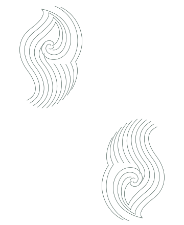

The pocket-square study.
See it on Ted’s site →
An interpretation of the pattern visible in Ted’s pocket square. On the site, the linework fades through the open space around the introduction, leaving the portrait and words in focus.

An interpretation of the pattern visible in Ted’s pocket square. On the site, the linework fades through the open space around the introduction, leaving the portrait and words in focus.